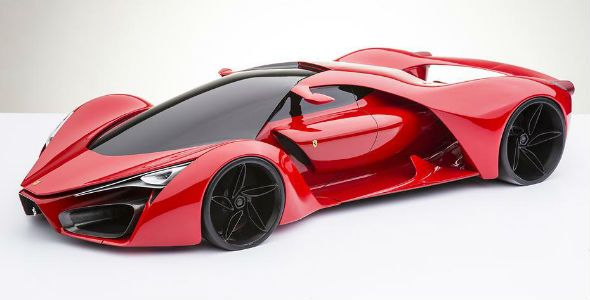
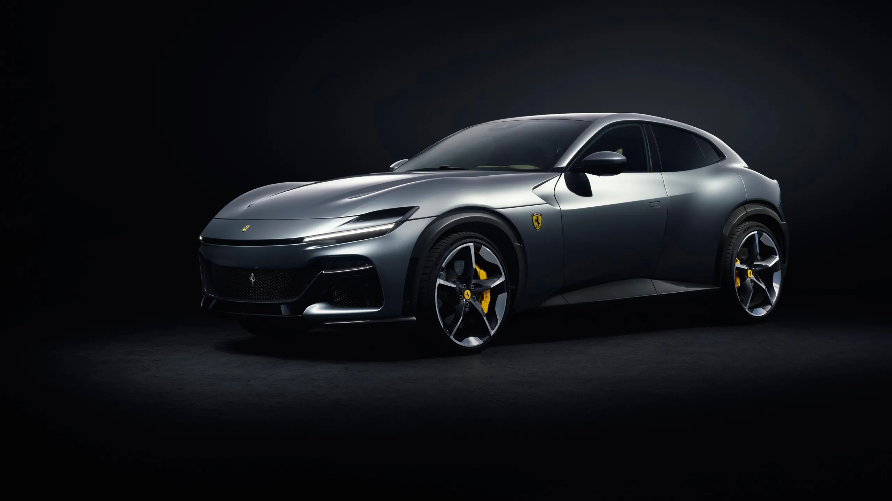
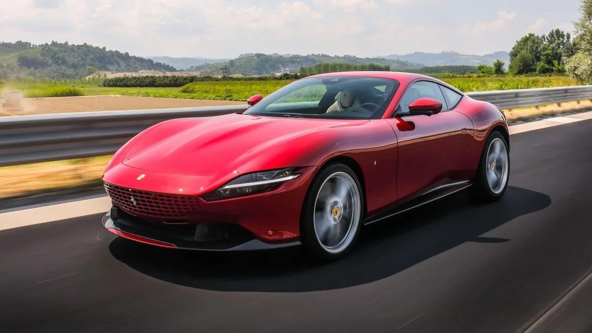

| FERRARI | 
| ||
| Inicio | Producto | ||
|  |  |
||
| Ferrari es un fabricante de automóviles superdeportivos con sede en Maranello, provincia de Módena, en la región de Emilia-Romaña, Italia. Esta compañía es el resultante de la idea de su fundador Enzo Ferrari de crear una marca de automóviles de turismo con prestaciones lujosas y deportivas, basándose en los éxitos obtenidos a partir de la creación de su Scuderia Ferrari de automovilismo en 1929. | |||
|  |  | ||
| La verdadera pasión de Enzo Ferrari, a pesar de su extensa carrera con automóviles de calle, fue siempre la competición de coches. Su escudería comenzó como patrocinadora independiente para pilotos en diversos coches, pero pronto se convirtió en el equipo de la casa de Alfa Romeo. Tras su marcha de Alfa Romeo, Enzo Ferrari comenzó a diseñar y fabricar sus propios coches. El equipo Ferrari apareció por primera vez en un Gran Premio Europeo tras finalizar la Segunda Guerra Mundial. | |||
 |
 | ||